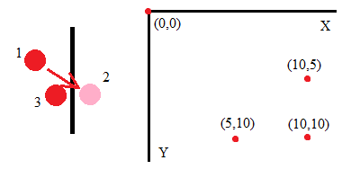

Create a page with a canvas tag. Create an onLoad
event for the body. Let that event call a function where you save the context
for that canvas. You can look up more information
here.
Paint an object on the canvas at an (x,y) defined by two variables. Use a time
function to wait 250 milliseconds between calls to the draw function.
Every time the function is called, move the x and y and then redraw. If you always
move by the same amount (we might think of this as the x and y velocity)
the object will steadily move across the screen and eventually out of view.
Add a logic check to the draw function. After moving, check if the
x or y have exceeded a boundary. If the ball is at position 1
and it moves to position 2 outside of boundary you can "bounce" off to position 3 and
reverse the x velocity. You need to check for each of these conditions. Remember, that
computer graphics are in the inverted first quadrant.

x<0
x>max_width
y<0
y>max_height
Put all this into a single web page. Submit a link to the lab via canvas.